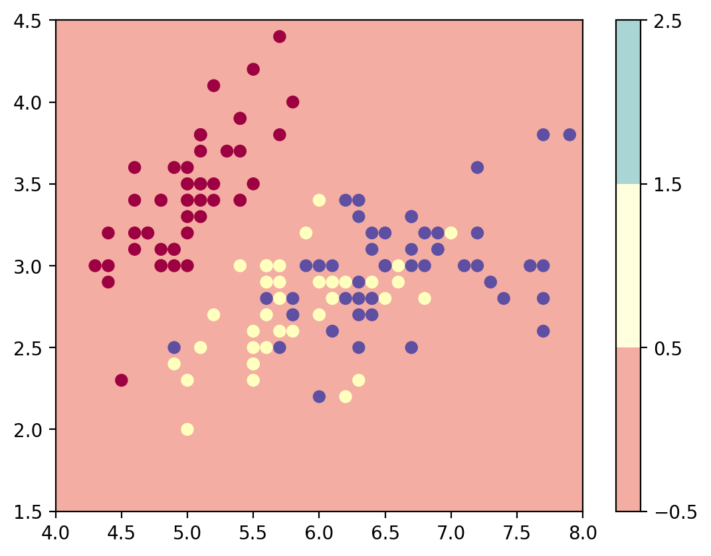

import numpy as np
import sklearn
import torch
import torch.nn as nn
import torch.nn.functional as F
import matplotlib.pyplot as plt
from latexify import *
%matplotlib inline
%config InlineBackend.figure_format = 'retina'Logistic Regression Torch
ML
class LogisticRegression(nn.Module):
def __init__(self, input_dim):
super(LogisticRegression, self).__init__()
self.linear = nn.Linear(input_dim, 1)
def forward(self, x):
logits = self.linear(x)
return logitsfrom sklearn.datasets import make_moonsX, y = make_moons(n_samples=100, noise=0.1)plt.scatter(X[:, 0], X[:, 1], c=y, cmap=plt.cm.Spectral)
log_reg = LogisticRegression(2)log_reg.linear.weight, log_reg.linear.bias(Parameter containing:
tensor([[0.2382, 0.5536]], requires_grad=True),
Parameter containing:
tensor([0.1851], requires_grad=True))log_reg(torch.tensor([1, 0.0]))tensor([0.4233], grad_fn=<AddBackward0>)# Predict with the model
def predict_plot_grid(model):
XX, YY = torch.meshgrid(torch.linspace(-2, 3, 100), torch.linspace(-2, 2, 100))
X_grid = torch.cat([XX.unsqueeze(-1), YY.unsqueeze(-1)], dim=-1)
logits = model(X_grid)
probs = torch.sigmoid(logits).reshape(100, 100)
plt.contourf(XX, YY, probs.detach().numpy(), levels=[0.0, 0.1, 0.2,0.3, 0.4,0.5, 0.6,0.7, 0.8,0.9, 1.0],
cmap=plt.cm.Spectral, alpha=0.5)
plt.colorbar()
plt.scatter(X[:, 0], X[:, 1], c=y, cmap=plt.cm.Spectral)
predict_plot_grid(log_reg)
/Users/nipun/miniconda3/lib/python3.9/site-packages/torch/functional.py:478: UserWarning: torch.meshgrid: in an upcoming release, it will be required to pass the indexing argument. (Triggered internally at /Users/runner/miniforge3/conda-bld/pytorch-recipe_1664817783366/work/aten/src/ATen/native/TensorShape.cpp:2895.)
return _VF.meshgrid(tensors, **kwargs) # type: ignore[attr-defined]
opt = torch.optim.Adam(log_reg.parameters(), lr=0.01)
converged = False
prev_loss = 1e8
i = 0
while not converged:
opt.zero_grad()
logits = log_reg(torch.tensor(X, dtype=torch.float32))
loss = nn.BCEWithLogitsLoss()(logits, torch.tensor(y, dtype=torch.float32).view(-1, 1))
loss.backward()
opt.step()
if i%10==0:
print(i, loss.item())
if np.abs(prev_loss - loss.item()) < 1e-5:
converged = True
prev_loss = loss.item()
i = i + 10 0.7676702737808228
10 0.7178489565849304
20 0.6734200119972229
30 0.6346784830093384
40 0.6013920903205872
50 0.5729667544364929
60 0.5486723184585571
70 0.5278077721595764
80 0.5097730755805969
90 0.4940771758556366
100 0.48032107949256897
110 0.4681788980960846
120 0.4573836922645569
130 0.44771644473075867
140 0.43899765610694885
150 0.4310801327228546
160 0.42384302616119385
170 0.4171868562698364
180 0.4110296666622162
190 0.40530359745025635
200 0.39995262026786804
210 0.3949298858642578
220 0.3901965618133545
230 0.38572028279304504
240 0.38147369027137756
250 0.37743401527404785
260 0.37358200550079346
270 0.3699013590812683
280 0.3663782775402069
290 0.3630010187625885
300 0.3597593605518341
310 0.35664474964141846
320 0.3536495566368103
330 0.35076722502708435
340 0.3479919135570526
350 0.3453184962272644
360 0.34274226427078247
370 0.3402591943740845
380 0.3378653824329376
390 0.3355572521686554
400 0.3333316147327423
410 0.33118531107902527
420 0.32911548018455505
430 0.3271194100379944
440 0.325194388628006
450 0.32333794236183167
460 0.32154765725135803
470 0.31982114911079407
480 0.3181561231613159
490 0.31655043363571167
500 0.3150019347667694
510 0.3135085999965668
520 0.3120683431625366
530 0.3106793463230133
540 0.30933961272239685
550 0.3080473840236664
560 0.3068009316921234
570 0.30559852719306946
580 0.3044385612010956
590 0.30331939458847046
600 0.3022395372390747
610 0.3011975586414337
620 0.3001919984817505
630 0.2992214858531952
640 0.29828476905822754
650 0.2973804771900177
660 0.29650750756263733
670 0.29566460847854614
680 0.2948507070541382
690 0.2940647006034851
700 0.2933056354522705
710 0.29257240891456604
720 0.2918640971183777
730 0.2911797761917114
740 0.2905186414718628
750 0.28987976908683777
760 0.2892623543739319
770 0.28866562247276306
780 0.2880888879299164
790 0.2875313460826874
800 0.2869923710823059
810 0.28647124767303467
820 0.28596732020378113
830 0.2854800820350647
840 0.28500884771347046
850 0.28455308079719543
860 0.28411227464675903
870 0.2836858928203583
880 0.2832733690738678
890 0.28287428617477417
900 0.2824881970882416
910 0.28211456537246704
920 0.2817530333995819
930 0.28140318393707275
940 0.2810646891593933
950 0.2807370126247406
960 0.28041982650756836
970 0.2801128625869751
980 0.279815673828125
990 0.27952805161476135
1000 0.2792495787143707
1010 0.2789800465106964
1020 0.27871906757354736
1030 0.2784663438796997
1040 0.2782217264175415
1050 0.2779847979545593
1060 0.2777554392814636
1070 0.2775333523750305
1080 0.2773182988166809
1090 0.2771100103855133
1100 0.27690833806991577
1110 0.2767130136489868
1120 0.2765239179134369
1130 0.2763407528400421
1140 0.27616336941719055
1150 0.2759915888309479
1160 0.27582523226737976
1170 0.2756641209125519
1180 0.2755081057548523
1190 0.2753569781780243
1200 0.2752106487751007
1210 0.27506890892982483
1220 0.2749316692352295
1230 0.27479875087738037
1240 0.2746700346469879
1250 0.2745453715324402
1260 0.27442467212677
1270 0.2743077576160431
1280 0.274194598197937
1290 0.2740849554538727
1300 0.2739788591861725
1310 0.2738761007785797predict_plot_grid(log_reg)
# Iris dataset
from sklearn.datasets import load_iris
iris = load_iris()X = iris.data
y = iris.targetplt.scatter(X[:, 0], X[:, 1], c=y, cmap=plt.cm.Spectral)
plt.xlabel('Sepal length')
plt.ylabel('Sepal width')Text(0, 0.5, 'Sepal width')
class ThreeClassLogisticRegression(nn.Module):
def __init__(self, input_dim):
super(ThreeClassLogisticRegression, self).__init__()
self.linear1 = nn.Linear(input_dim, 1)
self.linear2 = nn.Linear(input_dim, 1)
self.linear3 = nn.Linear(input_dim, 1)
def forward(self, x):
logits1 = self.linear1(x) #x^T theta_1 (z1)
logits2 = self.linear2(x) # x^T theta_2 (z2)
logits3 = self.linear3(x) # x^T theta_3 (z3)
return torch.cat([logits1, logits2, logits3], dim=-1)
class MultiClassLogisticRegression(nn.Module):
def __init__(self, input_dim, num_classes):
super(MultiClassLogisticRegression, self).__init__()
self.linear = nn.Linear(input_dim, num_classes)
def forward(self, x):
logits = self.linear(x)
return logitsmlr = ThreeClassLogisticRegression(2)X_tensor = torch.tensor(X, dtype=torch.float32)[:,:2]
y_tensor = torch.tensor(y, dtype=torch.long)X_tensor[:5]tensor([[5.1000, 3.5000],
[4.9000, 3.0000],
[4.7000, 3.2000],
[4.6000, 3.1000],
[5.0000, 3.6000]])mlr(X_tensor).shapetorch.Size([150, 3])mlr(X_tensor)[:5]tensor([[-1.0508, -5.1562, 0.7905],
[-1.0569, -4.7130, 0.7451],
[-1.0204, -4.7293, 0.6818],
[-1.0143, -4.6061, 0.6553],
[-1.0325, -5.1643, 0.7589]], grad_fn=<SliceBackward0>)mlr_efficient = MultiClassLogisticRegression(2, 3)
mlr_efficient(X_tensor).shapetorch.Size([150, 3])mlr_efficient(X_tensor[:5])tensor([[ 0.5415, -3.7323, -3.4057],
[ 0.7909, -3.5029, -3.3039],
[ 0.5616, -3.4831, -3.1574],
[ 0.5837, -3.4133, -3.0970],
[ 0.4269, -3.7224, -3.3325]], grad_fn=<AddmmBackward0>)z1 = 0.5415
z2 = -3.7323
z3 = -3.4057
e_z1 = np.exp(z1)
e_z2 = np.exp(z2)
e_z3 = np.exp(z3)
p1 = e_z1/(e_z1 + e_z2 + e_z3)
p2 = e_z2/(e_z1 + e_z2 + e_z3)
p3 = e_z3/(e_z1 + e_z2 + e_z3)
print(p1, p2, p3)0.9678317468163447 0.013480689538674706 0.018687563644980688nn.Softmax(dim=-1)(mlr_efficient(X_tensor[:5]))tensor([[0.9678, 0.0135, 0.0187],
[0.9706, 0.0133, 0.0162],
[0.9599, 0.0168, 0.0233],
[0.9582, 0.0176, 0.0242],
[0.9624, 0.0152, 0.0224]], grad_fn=<SoftmaxBackward0>)
nn.Softmax(dim=-1)(mlr_efficient(X_tensor[:5])).sum(dim=-1)tensor([1.0000, 1.0000, 1.0000, 1.0000, 1.0000], grad_fn=<SumBackward1>)def plot_most_probable_class(model):
XX, YY = torch.meshgrid(torch.linspace(4, 8, 100), torch.linspace(1.5, 4.5, 100))
X_grid = torch.cat([XX.unsqueeze(-1), YY.unsqueeze(-1)], dim=-1)
logits = model(X_grid)
predicted_class = torch.argmax(logits, dim=-1)
plt.contourf(XX, YY, predicted_class.reshape(100, 100).detach().numpy(), levels=[-0.5, 0.5, 1.5, 2.5],
cmap=plt.cm.Spectral, alpha=0.5)
plt.colorbar()
plt.scatter(X[:, 0], X[:, 1], c=y, cmap=plt.cm.Spectral)
plot_most_probable_class(mlr_efficient)
logits = mlr_efficient(X_tensor)
nn.Softmax(dim=-1)(logits[:5])tensor([[0.9678, 0.0135, 0.0187],
[0.9706, 0.0133, 0.0162],
[0.9599, 0.0168, 0.0233],
[0.9582, 0.0176, 0.0242],
[0.9624, 0.0152, 0.0224]], grad_fn=<SoftmaxBackward0>)y_tensortensor([0, 0, 0, 0, 0, 0, 0, 0, 0, 0, 0, 0, 0, 0, 0, 0, 0, 0, 0, 0, 0, 0, 0, 0,
0, 0, 0, 0, 0, 0, 0, 0, 0, 0, 0, 0, 0, 0, 0, 0, 0, 0, 0, 0, 0, 0, 0, 0,
0, 0, 1, 1, 1, 1, 1, 1, 1, 1, 1, 1, 1, 1, 1, 1, 1, 1, 1, 1, 1, 1, 1, 1,
1, 1, 1, 1, 1, 1, 1, 1, 1, 1, 1, 1, 1, 1, 1, 1, 1, 1, 1, 1, 1, 1, 1, 1,
1, 1, 1, 1, 2, 2, 2, 2, 2, 2, 2, 2, 2, 2, 2, 2, 2, 2, 2, 2, 2, 2, 2, 2,
2, 2, 2, 2, 2, 2, 2, 2, 2, 2, 2, 2, 2, 2, 2, 2, 2, 2, 2, 2, 2, 2, 2, 2,
2, 2, 2, 2, 2, 2])opt = torch.optim.Adam(mlr_efficient.parameters(), lr=0.01)
converged = False
prev_loss = 1e8
i = 0
while not converged:
opt.zero_grad()
logits = mlr_efficient(X_tensor)
loss = F.cross_entropy(logits, y_tensor)
loss.backward()
opt.step()
if i%10==0:
print(i, loss.item())
if np.abs(prev_loss - loss.item()) < 1e-5:
converged = True
prev_loss = loss.item()
i = i + 10 3.7834692001342773
10 2.5278563499450684
20 1.649053692817688
30 1.4267195463180542
40 1.4423983097076416
50 1.4182347059249878
60 1.3853305578231812
70 1.3675893545150757
80 1.34984290599823
90 1.3303377628326416
100 1.3111019134521484
110 1.2913520336151123
120 1.2712701559066772
130 1.2509937286376953
140 1.2305757999420166
150 1.2101225852966309
160 1.1897128820419312
170 1.169424295425415
180 1.149324655532837
190 1.129475712776184
200 1.1099324226379395
210 1.090742826461792
220 1.071947693824768
230 1.0535815954208374
240 1.0356725454330444
250 1.0182429552078247
260 1.0013093948364258
270 0.9848831295967102
280 0.9689714312553406
290 0.9535769820213318
300 0.938698410987854
310 0.9243322610855103
320 0.9104706645011902
330 0.8971052169799805
340 0.884224534034729
350 0.8718162178993225
360 0.8598660230636597
370 0.8483598232269287
380 0.8372823596000671
390 0.8266181349754333
400 0.8163511157035828
410 0.8064659833908081
420 0.7969467639923096
430 0.7877782583236694
440 0.7789455652236938
450 0.770433783531189
460 0.762228786945343
470 0.7543169260025024
480 0.7466848492622375
490 0.7393199801445007
500 0.732210099697113
510 0.7253435254096985
520 0.7187092900276184
530 0.7122966647148132
540 0.7060956358909607
550 0.7000964283943176
560 0.6942901611328125
570 0.6886680126190186
580 0.6832218170166016
590 0.677943766117096
600 0.6728264093399048
610 0.6678626537322998
620 0.6630460023880005
630 0.6583700776100159
640 0.6538287997245789
650 0.649416446685791
660 0.6451278328895569
670 0.6409575939178467
680 0.6369009613990784
690 0.6329534649848938
700 0.6291106939315796
710 0.6253682374954224
720 0.6217225193977356
730 0.6181696653366089
740 0.6147060394287109
750 0.6113282442092896
760 0.6080331206321716
770 0.6048176288604736
780 0.6016789078712463
790 0.5986141562461853
800 0.5956206321716309
810 0.592695951461792
820 0.5898376703262329
830 0.5870434641838074
840 0.5843112468719482
850 0.5816388726234436
860 0.5790243744850159
870 0.5764658451080322
880 0.573961615562439
890 0.5715097188949585
900 0.5691086053848267
910 0.5667567253112793
920 0.564452588558197
930 0.5621946454048157
940 0.5599817037582397
950 0.5578120946884155
960 0.5556848645210266
970 0.5535985231399536
980 0.5515521168708801
990 0.5495445132255554
1000 0.5475744605064392
1010 0.5456410050392151
1020 0.5437432527542114
1030 0.5418800115585327
1040 0.5400506258010864
1050 0.5382539629936218
1060 0.5364894270896912
1070 0.5347558856010437
1080 0.5330528020858765
1090 0.531379222869873
1100 0.5297345519065857
1110 0.5281179547309875
1120 0.5265289545059204
1130 0.5249666571617126
1140 0.5234304070472717
1150 0.5219199061393738
1160 0.5204342603683472
1170 0.5189728736877441
1180 0.5175354480743408
1190 0.5161211490631104
1200 0.5147296190261841
1210 0.5133602619171143
1220 0.5120127201080322
1230 0.5106865167617798
1240 0.5093809366226196
1250 0.5080958604812622
1260 0.5068305730819702
1270 0.5055848956108093
1280 0.5043582320213318
1290 0.5031501650810242
1300 0.5019606351852417
1310 0.5007889270782471
1320 0.4996348023414612
1330 0.49849793314933777
1340 0.497377872467041
1350 0.49627435207366943
1360 0.4951871633529663
1370 0.4941157400608063
1380 0.49306005239486694
1390 0.49201950430870056
1400 0.49099406599998474
1410 0.48998332023620605
1420 0.4889870584011078
1430 0.48800501227378845
1440 0.48703670501708984
1450 0.4860822558403015
1460 0.4851410388946533
1470 0.48421311378479004
1480 0.48329809308052063
1490 0.4823956787586212
1500 0.4815058410167694
1510 0.48062819242477417
1520 0.4797625243663788
1530 0.47890880703926086
1540 0.4780665636062622
1550 0.4772358238697052
1560 0.4764161705970764
1570 0.47560766339302063
1580 0.4748099148273468
1590 0.47402286529541016
1600 0.4732462465763092
1610 0.4724799692630768
1620 0.471723735332489
1630 0.47097742557525635
1640 0.4702409505844116
1650 0.4695141613483429
1660 0.4687967300415039
1670 0.46808862686157227
1680 0.46738967299461365
1690 0.4666996896266937
1700 0.4660186767578125
1710 0.4653463363647461
1720 0.46468251943588257
1730 0.4640270471572876
1740 0.4633800685405731
1750 0.46274125576019287
1760 0.4621102809906006
1770 0.4614873230457306
1780 0.46087220311164856
1790 0.46026474237442017
1800 0.4596647024154663
1810 0.45907220244407654
1820 0.458486944437027
1830 0.45790889859199524
1840 0.45733800530433655
1850 0.4567739963531494
1860 0.45621684193611145
1870 0.45566651225090027
1880 0.45512282848358154
1890 0.4545856714248657
1900 0.45405498147010803
1910 0.4535306394100189
1920 0.4530125856399536
1930 0.45250067114830017
1940 0.4519948363304138
1950 0.451494961977005
1960 0.45100098848342896
1970 0.4505127966403961
1980 0.4500303566455841
1990 0.449553519487381
2000 0.44908222556114197
2010 0.4486163854598999
2020 0.4481559097766876
2030 0.44770076870918274
2040 0.4472508728504181
2050 0.4468061327934265
2060 0.4463663697242737
2070 0.44593164324760437
2080 0.4455018639564514
2090 0.4450768530368805
2100 0.44465672969818115
2110 0.44424134492874146
2120 0.44383037090301514
2130 0.44342416524887085
2140 0.44302231073379517
2150 0.4426250159740448
2160 0.44223204255104065
2170 0.4418434798717499
2180 0.4414590001106262
2190 0.441078782081604
2200 0.44070276618003845
2210 0.44033071398735046
2220 0.4399627149105072
2230 0.43959859013557434
2240 0.4392384886741638
2250 0.438882052898407
2260 0.43852952122688293
2270 0.43818068504333496
2280 0.4378354847431183
2290 0.4374939501285553
2300 0.43715596199035645
2310 0.43682149052619934
2320 0.436490535736084
2330 0.4361629784107208
2340 0.4358386695384979
2350 0.435517817735672
2360 0.43520018458366394
2370 0.43488579988479614
2380 0.43457457423210144
2390 0.4342665672302246
2400 0.4339614808559418
2410 0.4336596727371216
2420 0.4333606958389282
2430 0.43306466937065125
2440 0.4327716529369354
2450 0.4324815273284912
2460 0.43219420313835144
2470 0.4319096505641937
2480 0.43162789940834045
2490 0.4313487708568573
2500 0.4310724437236786
2510 0.4307987093925476
2520 0.4305276572704315
2530 0.4302590489387512
2540 0.4299930930137634
2550 0.42972955107688904
2560 0.4294686019420624
2570 0.4292098879814148
2580 0.42895376682281494
2590 0.42869991064071655
2600 0.42844831943511963
2610 0.4281991720199585
2620 0.4279521107673645
2630 0.4277074635028839
2640 0.42746496200561523
2650 0.4272245764732361
2660 0.4269863963127136
2670 0.4267502725124359
2680 0.42651626467704773
2690 0.4262843430042267
2700 0.426054447889328
2710 0.42582643032073975
2720 0.42560049891471863
2730 0.4253765642642975
2740 0.425154447555542
2750 0.42493417859077454
2760 0.42471593618392944
2770 0.42449942231178284
2780 0.4242846965789795
2790 0.42407187819480896
2800 0.42386072874069214
2810 0.4236513674259186
2820 0.42344367504119873
2830 0.42323774099349976
2840 0.4230334460735321
2850 0.4228307902812958
2860 0.4226297438144684
2870 0.4224303066730499
2880 0.4222325086593628
2890 0.42203617095947266
2900 0.42184144258499146
2910 0.42164820432662964
2920 0.42145657539367676
2930 0.4212663471698761
2940 0.4210774898529053
2950 0.420890212059021
2960 0.42070430517196655
2970 0.42051973938941956
2980 0.4203365743160248
2990 0.4201548099517822
3000 0.41997435688972473
3010 0.4197952151298523
3020 0.4196174442768097
3030 0.419440895318985
3040 0.4192656874656677
3050 0.41909173130989075
3060 0.41891905665397644
3070 0.4187474250793457
3080 0.4185771048069
3090 0.41840803623199463
3100 0.41824010014533997
3110 0.4180733263492584
3120 0.4179077446460724
3130 0.4177432358264923
3140 0.41757991909980774
3150 0.4174175560474396
3160 0.4172563850879669
3170 0.4170962870121002
3180 0.4169372618198395
3190 0.41677916049957275
3200 0.41662225127220154
3210 0.41646629571914673
3220 0.4163112938404083
3230 0.4161573350429535
3240 0.41600432991981506
3250 0.4158523678779602
3260 0.4157012701034546
3270 0.41555118560791016
3280 0.4154019355773926
3290 0.4152536988258362
3300 0.4151063561439514
3310 0.4149599075317383
3320 0.414814293384552
3330 0.41466957330703735
3340 0.4145258069038391
3350 0.41438278555870056
3360 0.41424065828323364
3370 0.4140993058681488
3380 0.41395875811576843
3390 0.4138190448284149
3400 0.41368016600608826
3410 0.4135420322418213
3420 0.4134047329425812
3430 0.41326820850372314
3440 0.41313236951828003
3450 0.4129973351955414
3460 0.4128630459308624
3470 0.412729412317276
3480 0.41259658336639404
3490 0.4124644100666046
3500 0.41233307123184204
3510 0.41220229864120483
3520 0.4120722711086273
3530 0.41194289922714233
3540 0.41181427240371704
3550 0.4116862118244171
3560 0.41155877709388733
3570 0.4114321768283844
3580 0.4113059937953949
3590 0.4111805856227875
3600 0.4110558032989502
3610 0.4109315872192383
3620 0.4108079671859741
3630 0.4106850326061249
3640 0.4105626344680786
3650 0.4104408919811249
3660 0.41031962633132935
3670 0.41019904613494873
3680 0.4100790023803711
3690 0.40995946526527405
3700 0.40984046459198
3710 0.40972214937210083
3720 0.4096042215824127
3730 0.4094869792461395
3740 0.40937015414237976
3750 0.40925392508506775
3760 0.40913817286491394
3770 0.4090230166912079
3780 0.40890824794769287
3790 0.408794105052948
3800 0.40868040919303894
3810 0.4085671603679657
3820 0.40845441818237305
3830 0.4083421528339386
3840 0.40823042392730713
3850 0.4081191122531891
3860 0.40800824761390686
3870 0.40789785981178284
3880 0.407787948846817
3890 0.4076785147190094
3900 0.40756943821907043
3910 0.40746086835861206
3920 0.4073527157306671
3930 0.4072449505329132
3940 0.4071376919746399
3950 0.40703079104423523
3960 0.4069243371486664
3970 0.40681830048561096
3980 0.40671268105506897
3990 0.40660741925239563
4000 0.4065026044845581
4010 0.4063981771469116
4020 0.4062941372394562
4030 0.4061904549598694
4040 0.40608716011047363
4050 0.4059842526912689
4060 0.40588176250457764
4070 0.4057796597480774
4080 0.405677855014801
4090 0.4055763781070709
4100 0.40547534823417664
4110 0.405374675989151
4120 0.40527433156967163mlr_efficient(X_tensor[:5])tensor([[ 1.5142, -3.6661, -5.1945],
[ 0.2573, -1.6901, -3.7988],
[ 1.6097, -3.0577, -5.3911],
[ 1.5404, -2.7862, -5.3336],
[ 2.1904, -4.3499, -5.9906]], grad_fn=<AddmmBackward0>)pred = F.softmax(mlr_efficient(X_tensor), dim=-1).detach().numpy()
pd.DataFrame(pred)| 0 | 1 | 2 | |
|---|---|---|---|
| 0 | 0.993200 | 0.005588 | 0.001212 |
| 1 | 0.862100 | 0.122973 | 0.014927 |
| 2 | 0.989798 | 0.009300 | 0.000902 |
| 3 | 0.985954 | 0.013027 | 0.001020 |
| 4 | 0.998279 | 0.001442 | 0.000279 |
| ... | ... | ... | ... |
| 145 | 0.000221 | 0.303988 | 0.695791 |
| 146 | 0.000041 | 0.519632 | 0.480326 |
| 147 | 0.000760 | 0.376843 | 0.622397 |
| 148 | 0.110826 | 0.396854 | 0.492319 |
| 149 | 0.025799 | 0.601164 | 0.373037 |
150 rows × 3 columns
import pandas as pddf = pd.DataFrame(pred, columns=iris.target_names)
df["GT"] = iris.target
df| setosa | versicolor | virginica | GT | |
|---|---|---|---|---|
| 0 | 0.993200 | 0.005588 | 0.001212 | 0 |
| 1 | 0.862100 | 0.122973 | 0.014927 | 0 |
| 2 | 0.989798 | 0.009300 | 0.000902 | 0 |
| 3 | 0.985954 | 0.013027 | 0.001020 | 0 |
| 4 | 0.998279 | 0.001442 | 0.000279 | 0 |
| ... | ... | ... | ... | ... |
| 145 | 0.000221 | 0.303988 | 0.695791 | 2 |
| 146 | 0.000041 | 0.519632 | 0.480326 | 2 |
| 147 | 0.000760 | 0.376843 | 0.622397 | 2 |
| 148 | 0.110826 | 0.396854 | 0.492319 | 2 |
| 149 | 0.025799 | 0.601164 | 0.373037 | 2 |
150 rows × 4 columns
# Find prediction
y_pred = pred.argmax(axis=-1)
df["Predicted Class"] = y_preddf| setosa | versicolor | virginica | GT | Predicted Class | |
|---|---|---|---|---|---|
| 0 | 0.993200 | 0.005588 | 0.001212 | 0 | 0 |
| 1 | 0.862100 | 0.122973 | 0.014927 | 0 | 0 |
| 2 | 0.989798 | 0.009300 | 0.000902 | 0 | 0 |
| 3 | 0.985954 | 0.013027 | 0.001020 | 0 | 0 |
| 4 | 0.998279 | 0.001442 | 0.000279 | 0 | 0 |
| ... | ... | ... | ... | ... | ... |
| 145 | 0.000221 | 0.303988 | 0.695791 | 2 | 2 |
| 146 | 0.000041 | 0.519632 | 0.480326 | 2 | 1 |
| 147 | 0.000760 | 0.376843 | 0.622397 | 2 | 2 |
| 148 | 0.110826 | 0.396854 | 0.492319 | 2 | 2 |
| 149 | 0.025799 | 0.601164 | 0.373037 | 2 | 1 |
150 rows × 5 columns
# Accuracy
(y_pred == iris.target).mean()0.8266666666666667plot_most_probable_class(mlr_efficient)# Add more features like x^2, xy, y^2
X = iris.data
y = iris.target
X = np.concatenate([X, X**2, X[:, [0]]*X[:, [1]], X[:, [1]]**2], axis=-1)
X_tensor = torch.tensor(X, dtype=torch.float32)
mlr_efficient = MultiClassLogisticRegression(10, 3)
opt = torch.optim.Adam(mlr_efficient.parameters(), lr=0.01)
converged = False
prev_loss = 1e8
i = 0
while not converged:
opt.zero_grad()
logits = mlr_efficient(X_tensor)
loss = F.cross_entropy(logits, y_tensor)
loss.backward()
opt.step()
if i%10==0:
print(i, loss.item())
if np.abs(prev_loss - loss.item()) < 1e-5:
converged = True
prev_loss = loss.item()
i = i + 1
0 7.328600883483887
10 2.1260838508605957
20 1.142831563949585
30 0.860477089881897
40 0.6673010587692261
50 0.48362672328948975
60 0.40385228395462036
70 0.33903008699417114
80 0.2988366484642029
90 0.26774561405181885
100 0.24411135911941528
110 0.2247859686613083
120 0.2087727040052414
130 0.19520965218544006
140 0.18358972668647766
150 0.17353105545043945
160 0.16474705934524536
170 0.15701723098754883
180 0.150166854262352
190 0.14405710995197296
200 0.138575941324234
210 0.13363228738307953
220 0.12915153801441193
230 0.12507188320159912
240 0.12134184688329697
250 0.11791844666004181
260 0.11476516723632812
270 0.11185110360383987
280 0.10914991796016693
290 0.10663879662752151
300 0.1042981818318367
310 0.1021110936999321
320 0.10006263852119446
330 0.09813988208770752
340 0.096331387758255
350 0.09462711215019226
360 0.09301812201738358
370 0.09149643033742905
380 0.09005502611398697
390 0.08868753910064697
400 0.08738835155963898
410 0.08615230768918991
420 0.08497478812932968
430 0.08385167270898819
440 0.0827791690826416
450 0.08175379037857056
460 0.08077248185873032
470 0.07983234524726868
480 0.07893076539039612
490 0.07806537300348282
500 0.0772339478135109
510 0.07643447071313858
520 0.07566508650779724
530 0.07492410391569138
540 0.07420988380908966
550 0.07352094352245331
560 0.07285598665475845
570 0.07221370190382004
580 0.07159288972616196
590 0.07099249213933945
600 0.07041147351264954
610 0.06984890252351761
620 0.06930385529994965
630 0.06877549737691879
640 0.06826306879520416
650 0.06776581704616547
660 0.06728304177522659
670 0.06681415438652039
680 0.06635847687721252
690 0.06591547280550003
700 0.06548459827899933
710 0.06506536155939102
720 0.06465724110603333
730 0.06425981968641281
740 0.06387266516685486
750 0.06349535286426544
760 0.06312751024961472
770 0.06276876479387283
780 0.06241879239678383
790 0.06207722797989845
800 0.06174378842115402
810 0.06141818314790726
820 0.061100106686353683
830 0.060789331793785095
840 0.06048554182052612
850 0.060188546776771545
860 0.05989808961749077
870 0.05961393937468529
880 0.05933591350913048
890 0.059063803404569626
900 0.05879741534590721
910 0.058536529541015625
920 0.05828104540705681
930 0.05803070589900017
940 0.05778540298342705
950 0.057545002549886703
960 0.057309310883283615
970 0.057078178972005844
980 0.05685151368379593
990 0.05662914365530014
1000 0.05641096830368042
1010 0.05619687959551811
1020 0.05598672106862068
1030 0.05578041076660156
1040 0.0555778369307518
1050 0.05537889525294304
1060 0.055183473974466324
1070 0.05499148741364479
1080 0.05480283871293068
1090 0.05461744964122772
1100 0.054435208439826965
1110 0.054256077855825424
1120 0.054079946130514145
1130 0.053906746208667755
1140 0.053736381232738495
1150 0.053568802773952484
1160 0.053403954952955246
1170 0.05324173718690872
1180 0.05308208614587784
1190 0.05292496457695961
1200 0.05277031287550926
1210 0.05261805281043053
1220 0.052468135952949524
1230 0.05232050642371178
1240 0.05217510461807251
1250 0.052031904458999634
1260 0.05189081281423569
1270 0.05175181105732918
1280 0.051614876836538315
1290 0.05147990211844444
1300 0.051346879452466965
1310 0.051215771585702896
1320 0.05108652263879776
1330 0.05095909908413887
1340 0.050833456218242645
1350 0.050709549337625504
1360 0.05058738589286804
1370 0.050466880202293396
1380 0.050348009914159775
1390 0.05023074895143509
1400 0.05011507496237755
1410 0.050000932067632675
1420 0.04988830164074898
1430 0.04977715015411377
1440 0.049667440354824066
1450 0.04955914616584778
1460 0.04945225641131401
1470 0.04934674873948097
1480 0.04924257844686508
1490 0.04913971200585365
1500 0.049038149416446686# Accuracy
pred = F.softmax(mlr_efficient(X_tensor), dim=-1).detach().numpy()
y_pred = pred.argmax(axis=-1)
(y_pred == iris.target).mean()0.9866666666666667